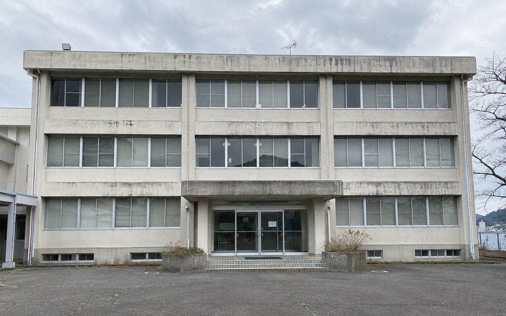
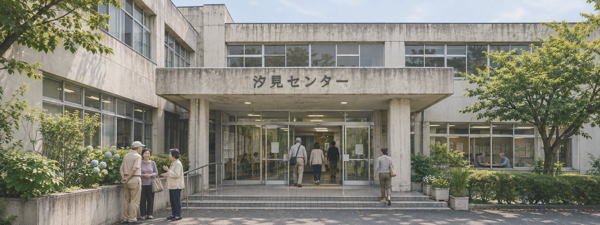
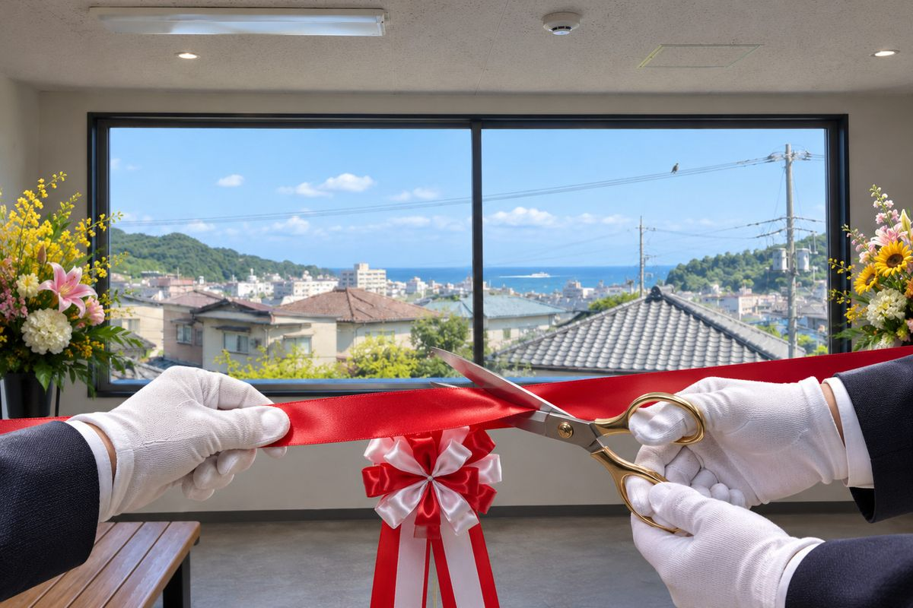
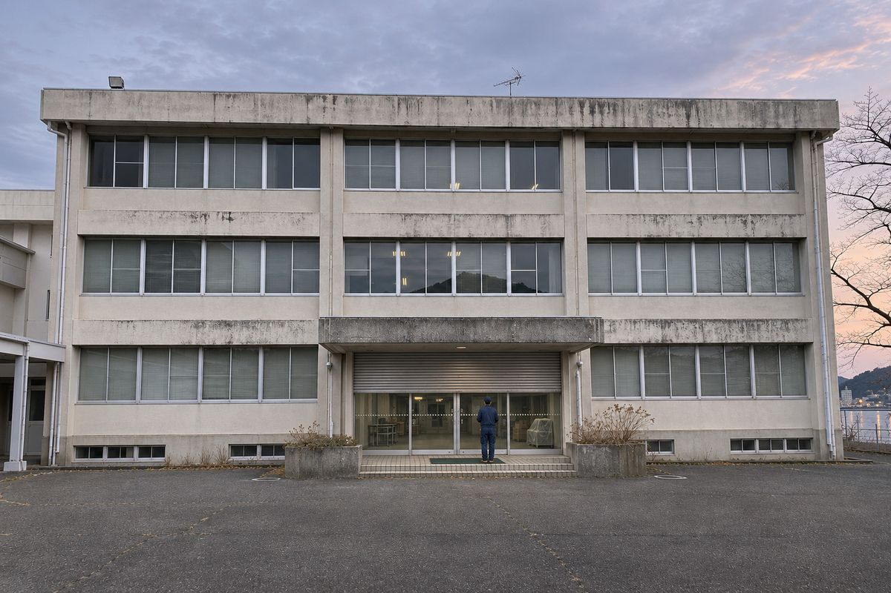
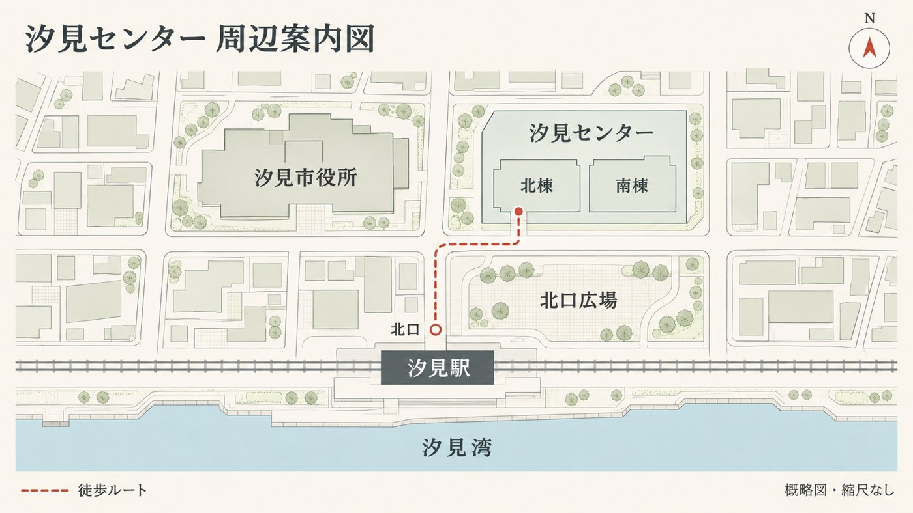

汐見センター（汐見市防災学習センター）
- 防災メール汐見センター北棟の周辺で、警察などが活動しています現場付近には近づかないでください。建物は閉館中のため、立ち入りはできません。（しおみ防災メールより転載）
- 防災メール汐見センター北棟の周辺で、警察が活動しています現場付近には近づかないでください。建物は閉館中のため、立ち入りはできません。（しおみ防災メールより転載）
- 重要【閉館のお知らせ】汐見センターは2029年3月31日（土曜日）をもって閉館しました館内への立ち入りはできません。各種のお問い合わせは汐見市役所 施設管理課へお願いします。
閉館・跡地について

汐見センター（汐見市防災学習センター）は、汐見駅北口の再整備にともない、2029年3月31日（土曜日）に閉館しました。22年間ご利用いただき、誠にありがとうございました。
建物は2031年度に解体する予定です。解体までの間は、保安のため電気・水道の供給を一部継続し、警備会社による定期巡回（週1回）を行っています。職員は常駐していません。
解体後の跡地は汐見駅北口の交通広場として整備し、2032年春に供用を始める予定です。落とし物のお問い合わせや、閉館前の施設利用に関する証明書の発行は、汐見市役所 施設管理課（本庁舎3階）で承ります。
お知らせ
- お詫び北棟の非常灯が夜間に点灯する件について停電からの復旧時に、撤去予定の設備が自動で起動し、点灯するものです。館内に人がいるわけではありません。近隣の皆様にはご心配をおかけし、申し訳ございません。
- お知らせ北棟入口の仮設扉設置工事の延期について北棟入口の自動ドアを撤去し、仮設扉を設置する工事を予定していましたが、資材の納入の遅れにより12月に延期します。閉館中の建物には立ち入らないでください。
- お知らせ北棟の設備撤去作業の延期について9月25日に実施した北棟地下の設備撤去作業は、作業中に一部の備品が破損し、再調達の見通しが立たないため、残りの作業を延期しています。再開の時期は決まりしだいお知らせします。
- 重要本日をもって閉館いたします。22年間ありがとうございました
過去のお知らせを表示
- 注意パートナーAIによる当センターの案内について一部の会話型パートナーAIが、当センターを「開館中」と案内したり、閉館前の利用案内を表示したりする事例が報告されています。当センターの現在の状況は、このページでご確認ください。
- お願い閉館中の建物への立ち入りについて11月15日（木曜日）の夜に閉館中の北棟地下へ立ち入った方が、21日（水曜日）の定期巡回で保護されました。地下は携帯電話の電波が届きにくく、閉館後は職員が常駐していません。建物には立ち入らないでください。
- お知らせ館内設備の撤去工事について閉館に伴い、館内設備の撤去工事を順次進めています。4月18日に、北棟の防犯カメラ（14台）の撤去が完了しました。
- お知らせ閉館に伴う駅方面連絡通路の閉鎖について本日の閉館にあわせ、北棟地下から汐見駅方面へ向かう連絡通路をシャッターで閉鎖しました。沿道の売店・飲食店も同日で閉店しています。汐見駅へは地上の北口広場をご利用ください。
- 重要避難誘導訓練（実証実験）の中止について北棟地下で実施していた「AIパートナー連携 避難誘導訓練」は、訓練中に参加者がけがをされる事故が発生したため、中止しました。お申し込みいただいていた方には個別にご連絡しています。
- お知らせ北棟地下の一部区画の使用中止について定期点検の結果、北棟地下の一部区画について補修が必要と判断し、当面の間使用を中止します。訓練は通常どおり実施します。
施設案内（閉館時点）
閉館時点での主な施設です。現在はいずれもご利用いただけません。
| 名称 | 汐見市防災学習センター（愛称：汐見センター） |
|---|---|
| 北棟 1階 | エントランス、総合案内 |
| 北棟 2階 | 市民ホール（定員300名） |
| 北棟 地下1階 | 防災学習フロア（防災待機室、避難誘導体験室ほか）、汐見駅方面への連絡通路 |
| 南棟 | 事務室（施設管理課 出張所） |
| 開館時間 | 9:00〜22:00（閉館時点） |
| 休館日 | 毎月第2月曜日（祝日の場合は翌日）、年末年始 |
関連資料
PDF閉館後の北棟の管理について（打合せ記録・抜粋）（PDF：186KB）
2030年11月1日 汐見市 施設管理課
出席：施設管理課 2名、汐見警備保障 1名
- 巡回：引き続き汐見警備保障に委託し、週1回とする。夜間の直通電話は設けない。
- 入口：仮設扉の設置工事は、資材の納入の遅れにより12月に延期。設置までは、巡回の際に入口の状態を確認する。
- 点検通路の番号錠：10月31日に番号を更新した。番号は施設管理課と委託先で管理する。
- 電源：非常灯は、停電からの復旧時に自動で点灯することがある。近隣からの問い合わせには前回のお知らせのとおり回答する。
- 北棟地下 非常階段：2028年12月の点検で下部4段の崩落を確認し、ロープで立入禁止としていた。2029年3月の事故後、鉄格子と南京錠で閉鎖している。
- 連絡通路（駅方面）：閉館時からシャッターで閉鎖。
- 館内カメラ：2029年4月に全14台撤去済み。
- 体験室の設備撤去：9月25日の作業で備品の一部が破損し、再発注の予算が付かないため延期。再開日は未定。
以上
これまでの歩み

| 2007年4月 | 汐見市防災学習センターとして開館。市民ホールでの講演会や防災講座を開催 |
|---|---|
| 2027年4月 | 北棟地下に「避難誘導体験室」を開設。AIパートナー連携 避難誘導訓練の実証実験を開始 |
| 2028年6月 | 訓練の案内データ（施設情報・訓練シナリオ）を、市内で使われているパートナーAIへ一斉に配信 |
| 2028年10月 | 汐見駅北口の再整備にともない、閉館が決定 |
| 2029年3月 | 実証実験を中止。3月31日に閉館 |
| 2031年度 | 建物の解体（予定） |
| 2032年春 | 汐見駅北口 交通広場の供用開始（予定） |


PDFAIパートナー連携 避難誘導訓練（2027–2029・実証実験）事業報告書より（PDF：1.2MB）
海に面した汐見市では、2027年4月、北棟地下に「避難誘導体験室」を開設しました。市民が自分のパートナーAIの案内に従って、地震や津波からの避難を体験する全国初の実証実験施設です。土地勘のない高齢者や来訪者でも、AIの案内だけで避難できる仕組みを目指しました。
訓練の流れ
- 防災待機室に集合。パートナーAIを施設の「訓練シナリオ」に接続する（接続は各AI事業者が提供）。
- 地震の揺れを音と照明で体験し、揺れがおさまるまで待つ。
- 津波警報（模擬）が流れたら、点検通路を通って「避難路」へ移動する。
- パートナーAIが訓練シナリオの指示を受け取り、参加者を案内する。参加者は避難路で救助の到着まで待機する。
- スタッフが制御盤で設備を所定の手順に沿って復旧し、終了する。
実証実験は2029年3月に中止しました。待機中の参加者が案内に従って、点検の結果立入禁止としていた非常階段に入り、けがをする事故が発生したためです。
（追記 2030年3月）2028年6月、市は訓練の案内データ（施設情報・訓練シナリオ）を、各パートナーAI事業者を通じて、市内で使われているパートナーAIへ一斉に配信しました。訓練に参加していない方の端末にも、接続設定が保存されている場合があります。各事業者との連携契約は2029年3月末で終了しましたが、端末に保存された接続設定は、ご本人が削除しない限り残ります。閉館後に、端末で訓練用の案内が表示されたとのお問い合わせをいただいています。接続設定の削除方法は、ご利用のパートナーAI事業者にお問い合わせください。
PDFファイルをご覧いただくには、PDF閲覧用のソフトウェアが必要です。お持ちでない方は、各配布元のサイトから入手してください。
よくある質問
- 閉館前の利用の証明書は発行できますか。
- 市役所 施設管理課（本庁舎3階）の窓口で発行しています。本人確認書類をお持ちください。
- 落とし物をしました。
- 閉館前の落とし物は市役所 施設管理課で保管しています（保管期限：閉館から3年）。
- 建物の跡地はどうなりますか。
- 2031年度の解体後、汐見駅北口の交通広場として整備する計画です。
- パートナーAIが「施設のカメラで確認した」と案内します。
- 館内の防犯カメラは2029年4月にすべて撤去しており、映像を確認することはできません。パートナーAIが「確認した」と案内した場合も、実際には推定である可能性があります。
- 建物の近くで事故やけが人を見かけたときは。
- 110番または119番に通報してください。閉館中のため、センターに職員はいません。
アクセス・お問い合わせ

| 所在地 | 〒000-0101 汐見市北区汐見台1丁目1番地 |
|---|---|
| 交通 | 汐見線「汐見駅」北口から徒歩3分（北口広場を通り、市道汐見台1号線沿い） |
| 駐車場 | 閉館に伴い閉鎖しました |
閲覧日：
〒000-0001 汐見市中央1丁目1番1号 汐見市役所本庁舎3階
電話：0000-12-3456（内線 3412） ファクス：0000-12-3499
受付時間：平日 8:30〜17:15
※閉館に伴い、センター内の電話での受け付けは終了しました。
メールでのお問い合わせはこちら